Network Compression with Principal Filter Analysis (PFA)#
Discover highly correlated filter, or more generically unit, responses within layers of a neural network. Guide network compression by removing redundant filter in order to decrease inference time and memory footprint while improving generalization.
For a more thorough discussion of this algorithm and its use, see the Description below.
General Usage#
Assuming a pipeline has been
set up to produce responses from a model,
PFA can be run like so:
from dnikit.introspectors import PFA
producer = ... # pipeline setup here
# Run PFA analysis on responses from a producer
result = PFA.introspect(producer, batch_size=128)
For PFA, like IUA,
inputs to introspection should be prepared by selecting which
layer responses to analyze for compression. For instance, for a model
that uses Conv2D layers, one option could be selecting all the responses
for those layers by reviewing the DNIKit Model’s
.response_infos() and passing them where the model is
used in the pipeline, e.g.:
dnikit_model = ... # load model here
# Find only conv2d layer responses
response_infos = dnikit_model.response_infos()
conv_response_names = [
info.name
for info in response_infos.values()
if info.layer.kind == ResponseInfo.LayerKind.CONV_2D
]
producer = pipeline(
dataset,
...
# Tell the model which responses to look at
dnikit_model(conv_response_names),
...
)
After running PFA, the results cannot be seen yet.
Instead, the output is a new PFA
object with information attached to build a “recipe” using a
particular compression strategy.
Here is an example of how to build and show a recipe using the default “KL” strategy:
recipe = pfa.get_recipe()
PFA.show(recipe)
Other strategies, including Energy, Size, and showing specific units to keep are explained in Config Options.
Note that PFA does not compress a network directly! It’s important to instead retrain the network model with the suggested layer sizes. The benefit of PFA is that it uses data passing through the model to make smart suggestions on how to revise layer sizes while (as much as possible) retaining accuracy.
For more detailed examples of PFA, see the suggested workflow or example notebooks.
Visualization#
The PFA.show method will by default print a table
(in a Jupyter notebook) of the suggested new layer sizes:
PFA.show(recipe, vis_type=PFA.VisType.TABLE)
It’s also possible to use the PFA.VisType.CHART option to display
a graph comparing recommended vs. original unit counts per layer:
PFA.show(recipe, vis_type=PFA.VisType.CHART)
In addition, to compare a number of different compression recipes,
it’s possible to pass a list of recipes into show:
recipe_KL = pfa.get_recipe()
recipe_energy_80 = pfa.get_recipe(
strategy=PFA.Strategy.Energy(energy_threshold=0.8, min_kept_count=3)
)
PFA.show([recipe_KL, recipe_energy_80])
For more options, see the API.
Config options#
The main configuration of PFA analysis is not done on the introspect() method
directly, but in PFA’s get_recipe method,
which is passed the return object of introspect. get_recipe has
a number of configuration options, named “strategies,” to choose from.
PFA Strategies#
PFA has different strategies that can be chosen in order to satisfy a specific target while identifying how many units are least correlated.
The strategies available are PFA Size, PFA Energy, and PFA KL.
PFA Energy#
PFA Energy is analogous to the idea of PCA where the user specifies the amount of energy that should be preserved. Similarly, in PFA Energy the user specifies how much energy of the existing responses should be preserved (in terms of eigenvalues of the covariance matrix). An energy of 1.0 will provide a recipe that contains almost all current units, the closer the energy value is to 0.0 the less number of units will be suggested as non-redundant.
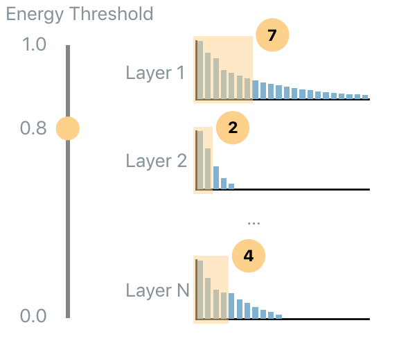The code to use the PFA Energy with energy level equal to 0.7 of the original energy, while ensuring that at least 3 units are always considered non-redundant is:
recipe_dictionary = pfa.get_recipe(
compression=PFA.Strategy.Energy(
energy_threshold=0.7,
min_kept_count=3
)
)
PFA Size#
PFA Size allows the user to specify the percentage of the weights (of the current model) that should be used in order to extract the same information extracted by the current model. For example, 1.0 means use the same number of weights of the current model, while 0.5 means that the algorithm will find the least correlated units such that the overall number of weights is half of the weights of all analyzed layers.
- The code to use the PFA Size strategy that uses 0.8 of the original weights, it ensures that at least 2 units are always
considered non-redundant, and it ensures that at least 0.6 of the energy is preserved, is:
recipe_dictionary = pfa.get_recipe(
strategy=PFA.Strategy.Size(
relative_size=0.8,
min_kept_count=3,
epsilon_energy=0.6
)
)
PFA KL#
PFA KL (also known as PFA-Zero) is a heuristic that does not require any user input parameter and tries to find the number of uncorrelated units. In order to understand how this strategy works it’s important to understand ideal eigenvalues set. If completely uncorrelated and equally contributing units are desired, then the empirical eigenvalue distribution should be flat: this means that all units are uncorrelated. The opposite scenario is when only a single eigenvalue is non-zero: this means that the same task can be performed equivalently well by a single unit.
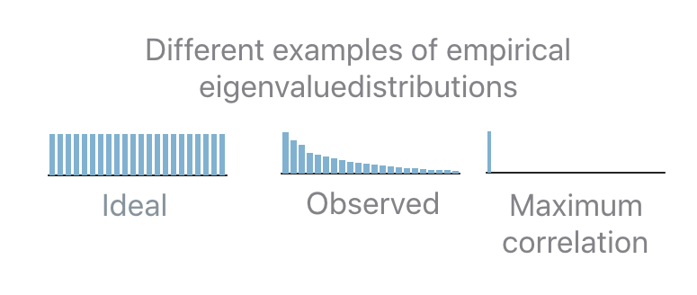In practice the observed distribution will be in-between the two extreme cases. In order to
determine how many units should be selected given an observed distribution, PFA relies on the
distance (the Kullback-Leibler divergence, KL, is used) between the observed and the ideal
distribution. If the distance is 0 then all units are uncorrelated. If the distance is equal to the
distance between the maximally correlated and the ideal distribution then all units are correlated.
In all the intermediate case, PFA interpolates between the two extremes in order to map a
distance x to the number b of uncorrelated units.
The code to use the PFA KL strategy follows:
recipe_dictionary = pfa.get_recipe(
strategy=PFA.Strategy.KL()
)
Unit Selection#
The recipes computed so far specify how many uncorrelated units each analyzed layer has, and provide some additional diagnostic information that could be useful for introspection (such as the KL-divergence between the normalized eigenvalues of the covariance matrix and the uniform distribution). However, they do not provide the information about which units are uncorrelated. This task is performed by the unit selection step.
All unit selection strategies are based on the Pearson’s correlation coefficients that can be extracted from the covariance matrix computed before. The Pearson’s correlation coefficients provide a measure of the strength of the linear relationship between pairs of variables (in this case pairs of units): the higher the coefficient the stronger the correlation.
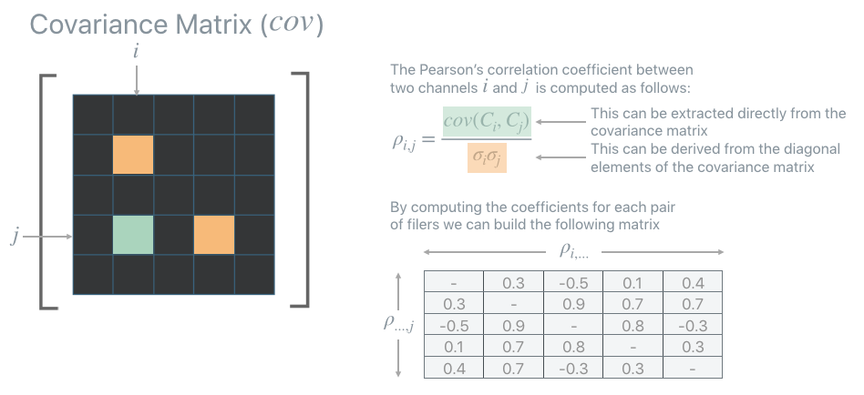Once the correlation matrix is computed PFA provides two greedy strategies to identify which units are uncorrelated, and which units are redundant: ABS-Max and L1-Max. When one of these strategies is employed the PFA recipe will contain also the indexes of the units that PFA identifies as uncorrelated (or more precisely as least correlated).
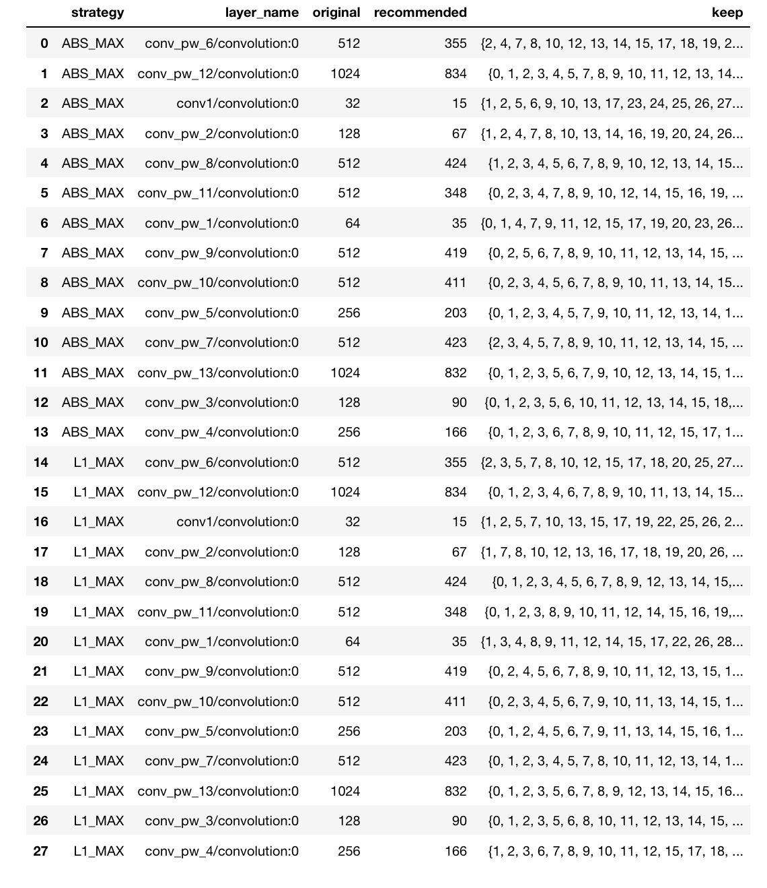ABS-Max#
ABS-Max identifies the pair of units with the highest amount of correlation (maximum absolute value of among the correlation coefficients). In order to disambiguate which unit of the selected pair should be considered redundant, it looks at the second highest, third highest, etc… coefficients until a choice can be made.
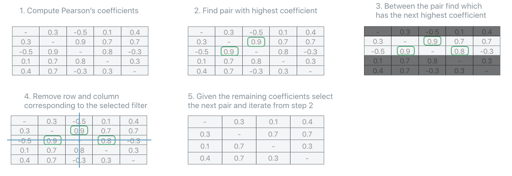The code in order to use the ABS-Max unit selection strategy is:
recipe_dictionary = pfa.get_recipe(
strategy=PFA.Strategy.SOME_STRATEGY,
unit_strategy=PFA.UnitSelectionStrategy.AbsMax
)
L1-Max#
L1Max strategy iteratively selects as redundant the unit with the highest sum of all its correlation coefficients. It identifies such unit as redundant, removes it from the correlation matrix, recompute the correlation matrix and iterates. In the rare, but theoretically possible, case that more than one unit have the same L1 sum of the correlation coefficients, the strategy switches to ABS-Max to select which unit should be considered redundant among the sub-set identified by the L1-Max strategy.
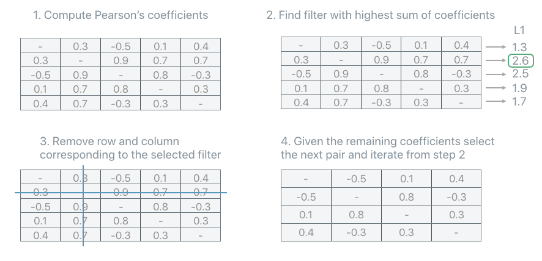The code in order to use the L1-Max unit selection strategy is:
recipe_dictionary = pfa.get_recipe(
strategy=PFA.Strategy.SOME_STRATEGY,
unit_strategy=PFA.UnitSelectionStrategy.L1Max
)
Description#
Modern neural networks tend to be big, making them challenging to deploy in resource-constrained devices. To reduce model size, network compression algorithms are often used. However, these algorithms can be controlled by hyper-parameters that are difficult to interpret and fine-tune. Compounding the problem, the size of each network layer is often chosen arbitrarily by following simple conventions rather than evidenced principles.
Principal Filter Analysis (PFA) is a compression algorithm that uses the data passing through a network to guide compression and propose alternative architectures. It can be used to quantify the correlation between units responses in a particular layer, when performing inference on some relevant dataset (typically the training set). PFA selects the dimension of the new layer, and optionally also which units should be preserved (this can speed up the retraining), by eliminating units that are redundant given the correlation found in the responses of such layer. The hyper parameters of PFA are thoroughly documented and relate to the final compressed model so characteristics such as footprint or inference time can be quantified even before running the algorithm.
Evidence#
PFA applied to network compression shows considerable compression rates without compromising accuracy, e.g., for VGG-16 on CIFAR-10, CIFAR-100 and ImageNet, PFA achieves a compression rate of 8x, 3x, and 1.4x with an accuracy gain of 0.4%, 1.4% points, and 2.4% respectively. In tests, it’s also shown that networks compressed with PFA achieve an accuracy that is very close to the empirical upper bound for a given compression ratio.
While most of the results in the PFA paper [1] are based on CNNs and images, there are also successful results of PFA with non-image data using RNNs as well as Transformers [2].
Algorithm#
Principal Filter Analysis (PFA) [1] is an algorithm that, given a dataset and a trained model, it introspects the responses of the model in order to identify units (i.e, filters in convolutional layers or individual neurons in fully connected layers) that produce correlated responses.
Correlation#
Most of the time the output of the last layer of neural networks is most interesting, however, analyzing its intermediate responses provides a unique glimpse on how the network perceives data throughout the different stages of the computation. Given a dataset, PFA analyzes the responses of a layer and recommends a subset of units required to preserve the information extracted by such layer while reducing redundancy among the units of the layer.
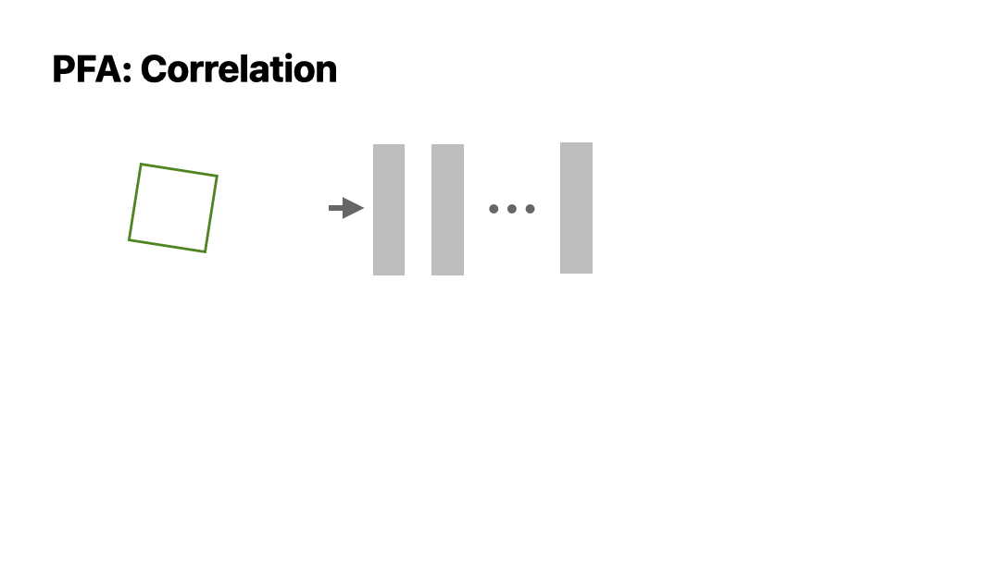The key ingredient of PFA is the set of eigenvalues extracted from the empirical covariance matrix computed from the responses.
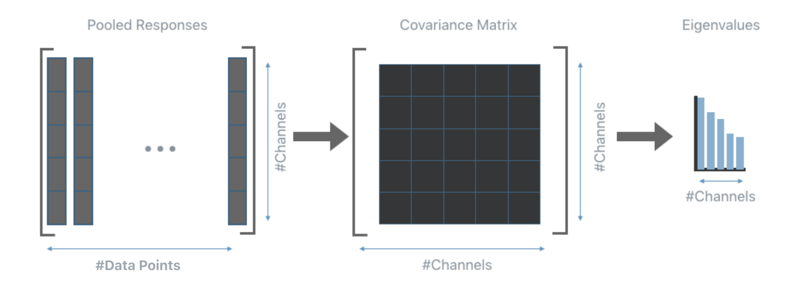Intuitively, in the ideal scenario all eigenvalues should be equally distributed, on the other hand, very small eigenvalues are indicative of a high amount of correlation among the responses, which in turns, means that a smaller set of units should be able to produce responses that contain the same amount of information as those produced by the current layer.
Note
PFA can be applied to the output response of any layer with no knowledge of the training procedure or the loss function. All PFA needs are the responses generated by the current layer.
Suggested workflow#
This section describes how PFA can be applied to the layers of a trained model in order to extract information about the correlation present in their responses.
1. Train a neural network.
2. Run inference using a random subset of the training set (or the whole training set if time allows) and extract the responses of the layers that should be analyzed. It is the user who chooses which layer to analyze, the analysis can target a specific layer, or include all convolutional and fully connected layers. This step can be performed using any external tool or with the DNIKit inference tools.
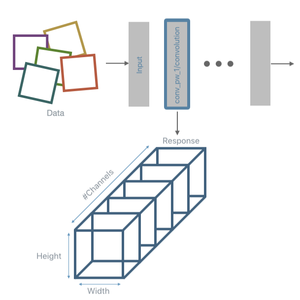Note
DNIKit supports models from several frameworks, to see the complete list of supported framework visit the
Installation page. When using a non-supported framework, it’s still possible to use PFA (as well as all other DNIKit
introspectors) by running inference (step 2) and collecting the responses without the help of DNIKit. This then requires
building a custom DNIKit Producer to passes the responses to the PFA
introspector or any other introspector (see create a custom).
3. Perform a response reduction. This step is only needed for convolutional layers. Once the response from a convolutional layer is obtained 1 value per each filter is extracted. A common reduction algorithm is Max or Avg pooling. Like for the previous step, DNIKit provides tools to perform this part of the pipeline (the most common pooling operations are already implemented, other can be implemented by extending a Processor, however, one can choose to process the responses using external tools).
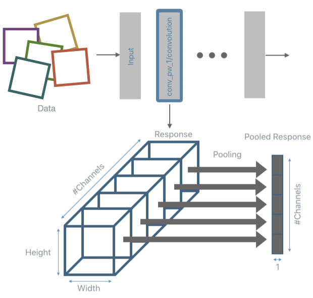4. Run PFA to introspect the responses. For each layer under analysis, this step will build the empirical covariance matrix and compute its eigenvalues. The code to compute this introspection is shown below:
pfa = PFA.introspect(
producer=response_producer,
batch_size=500
)
5. Apply a PFA strategy in order to obtain a recipe that will indicate how many units are needed for each analyzed layer in order to minimize correlation while achieving a specific target. The target depends on the strategy used. There are three strategies available: PFA Energy, PFA Size, and PFA KL. See PFA Strategies for details on each of the strategies. Once PFA has performed the introspection step, a recipe can be obtained by requesting it with one of the strategies listed earlier. For example, to use PFA Energy with an energy level of 0.7 but ensure that at least 3 units are always considered non-redundant the code would be the following:
recipe_dictionary = pfa.get_recipe(
strategy=PFA.Strategy.Energy(
energy_threshold=0.7,
min_kept_count=3
)
)
Up to this point, the recipe only specifies some information about the correlation found in the analyzed layers and how many units are needed to minimize correlation while achieving the target specified by the strategy. No information is yet provided regarding which units are the least redundant. Below is an example of the recipe produced by PFA:
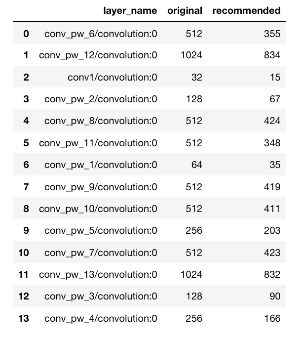In order to identify which units are identified as least redundant see the section about Unit Selection.
6. Use the information of the recipe. This steps depends on the target application.
Note
The user is responsible for steps 1 and 6, while all the other steps can be done within DNIKit.
PFA for Transfer Learning#
PFA can also be used for simultaneous compression and transfer learning by using the data of a new target task as input to the algorithm, where the model was trained on a different original task.
In transfer learning usually a model pre-trained on some dataset (original task) is fine-tuned on a different dataset (target task). Taking advantage of the first training has been shown to have advantages especially if the dataset available for the target task is limited in size. The problem with this approach is that the original model might contain much more information than what is needed to solve the final task. This is fine if there are no constraints on memory and inference time but it could become an issue if there are resource-constraints while also wanting to take advantage of transfer learning.
PFA is an introspector that can be used to drive the compression by analyzing responses to a specific dataset, rather than simply removing weights with small magnitude. Therefore, the compressed networks become specialized for the dataset used to generate the responses: depending on the dataset, the compressed architecture will change.
All is needed is to run PFA with the dataset that corresponds to the target task instead of the original task. Running PFA on the target task will let the algorithm choose which part of the network is most relevant for the final target task, and which part is unnecessary, resulting in simultaneous compression and transfer learning.
To demonstrate the effectiveness of PFA in the task of simultaneous compression and transfer learning, the following experiment has been performed.
Let \(D_a\) denote the dataset that corresponds to the original task used for training the full model. In this test, \(D_a\) is CIFAR-100. Let \(D_z\) denote the dataset that corresponds to the target task. Different \(D_z`s are generated by randomly sampling classes out of the original 100 classes contained in CIFAR-100. Two targets :math:`D_z\) of 10 classes each (\(R_1\) and \(R_2\)) are generated, alongside four targets \(D_z\) of 2 classes each (\(S_1\), \(S_2\), \(S_3\) and \(S_4\)). For each adaptation \(D_a\) → \(D_z\) the following experiments are performed using a VGG-16 model:
Full scratch: Train from scratch with the target task \(D_z\) (this does not include transfer learning);
Full fine: Train from scratch with the original task \(D_a\) and fine-tune with \(D_z\) (traditional transfer learning);
PFA scratch: Train from scratch with the original task \(D_a\), run PFA KL with \(D_z\) and train the compressed architecture from scratch with \(D_z\);
PFA fine: Train from scratch with the original task \(D_a\), run PFA KL with \(D_z\) and train the compressed architecture using Unit Selection with \(D_z\).
The results in the figure below show how the PFA fine strategy (red bars) performs similarly to the Full fine model (green bars), while obtaining models that are more than 4 times smaller (the footprint is indicated by the percentage values overlaid on top of the yellow and red bars). Moreover, the PFA fine strategy significantly outperforms the full model trained from scratch on the target domain (Full scratch, blue bars).
The compressed architectures generated by PFA, shown in the image below, are different depending on the complexity of the target task. Note how PFA obtains architectures with more filters for the 10 class subsets (\(R_1\) and \(R_2\)) than for the 2 class subset (\(S_1\), \(S_2\), \(S_3\) and \(S_4\)). Even among the 2 class subset, there is a small variation in the final architecture, reflecting the different level of difficulty to distinguish between the two target classes. These results show how by analyzing the responses rather than the weights, PFA is able to compress a network while specializing it to different target tasks.
Example#
Relevant API#
References